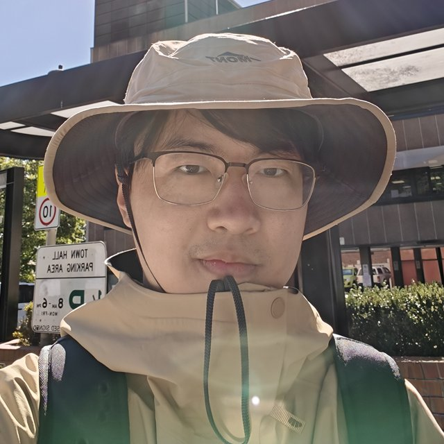

About
I am a postdoc at the Weizmann Institute of Science, hosted by Uriel Feige. Before that, I was a postdoc in the Algorithmic Decision Theory group at UNSW Sydney, working with Haris Aziz and Toby Walsh. I received my PhD from City University of Hong Kong in 2024, advised by Minming Li, and my BEng from the Computer Elite Class of Shandong University in 2020.
I work in theoretical computer science, on algorithmic game theory and computational social choice. My research asks how to make collective decision making fair, efficient, trustworthy and reliable.
Publications
Please see my DBLP page.
Experience and education
-
Postdoc, Weizmann Institute of ScienceNov 2026 – PresentHost: Uriel Feige
-
Postdoc, UNSW SydneyJul 2024 – Nov 2026Hosts: Haris Aziz and Toby Walsh
-
Visiting Student, Shanghai Jiao Tong UniversityJul 2023 – Jan 2024Host: Biaoshuai Tao, John Hopcroft Center for Computer Science
-
PhD in Computer Science, City University of Hong KongSep 2020 – Jun 2024Advisor: Minming Li
-
BEng, Shandong UniversitySep 2016 – Jun 2020Computer Elite Class
Honors and awards
-
Chinese Doctoral Dissertation Award in Agents and Multi-Agent Systems, Nomination2025
-
Outstanding Academic Performance Award, CityUHK2023
-
Research Tuition Scholarship, CityUHK2022, 2023
-
Third Prize (National), Mathematics Modeling and Cross Technology Contest2018
-
First-Class Scholarship, Shandong University2017
Teaching and mentoring
-
CS6382 Algorithm Analysis and Game TheorySep 2020 – Jun 2024Teaching Assistant, graduate course, CityUHK
-
CS3334 Data StructuresSep 2020 – Jun 2024Teaching Assistant, undergraduate course, CityUHK
Student projects
-
Fair Welfare Maximisation in Non-Monotone Data Exchanges2026Esther Djaidiguna, Honours thesis, UNSW Sydney · Co-supervised with Haris Aziz
-
Facility Location Games with Line Resources2026Yachao Yan, Bachelor's thesis, CityUHK · Co-supervised with Minming Li
Service
Program committees
AAAI 2024–2027 · AAMAS 2026–2027 · IJCAI 2024–2027 · NeurIPS 2025–2026 · ECAI 2025
Sub-reviewer
SODA 2027 · ISAAC 2025–2026 · SAGT 2024
Journal reviewer
- Artificial Intelligence
- ACM Transactions on Economics and Computation
- Journal of Artificial Intelligence Research
- Autonomous Agents and Multi-Agent Systems
- Theoretical Computer Science
- Journal of Combinatorial Optimization